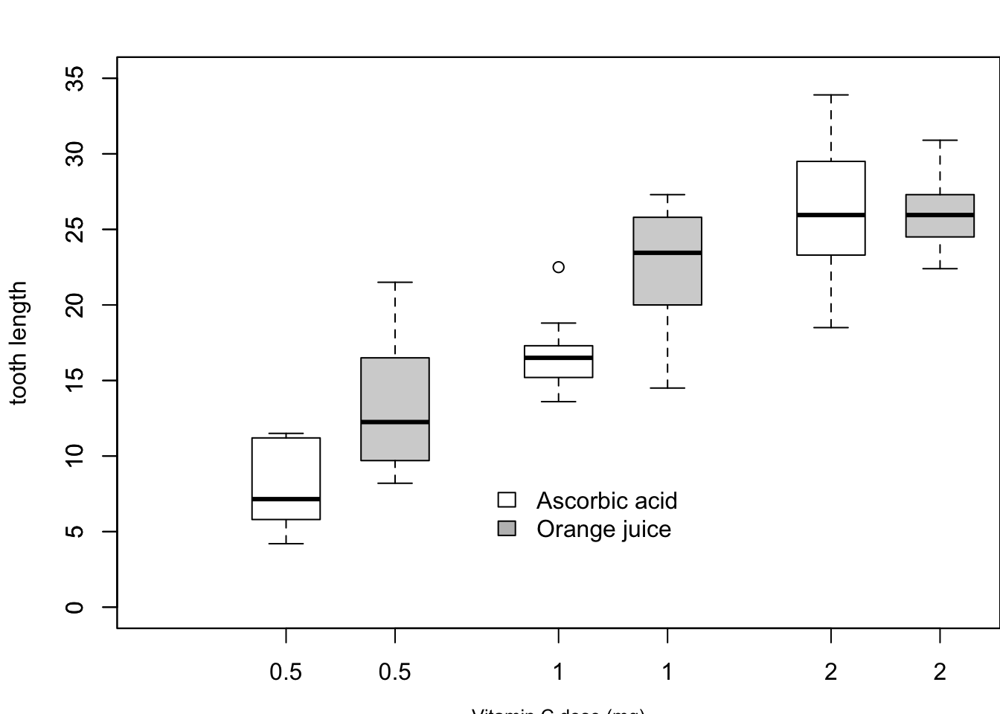

I selected the boxplot example from Murrell’s R graphics code. The comments below describe what each call contributes to the finished figure.
Code
# Set the margins for the boxplotpar(mar =c(3, 4.1, 2, 0))# Draw boxplots for the VC supplement groups at each doseboxplot( len ~ dose,data = ToothGrowth,boxwex =0.25,at =1:3-0.2,subset = supp =="VC",col ="white",xlab ="",ylab ="tooth length",ylim =c(0, 35))# Add the x-axis label below the plotmtext("Vitamin C dose (mg)",side =1,line =2.5,cex =0.8)# Add boxplots for the OJ supplement groups beside the VC boxplotsboxplot( len ~ dose,data = ToothGrowth,add =TRUE,boxwex =0.25,at =1:3+0.2,subset = supp =="OJ")# Add a legend identifying the two supplement groupslegend(1.5,9,c("Ascorbic acid", "Orange juice"),fill =c("white", "gray"),bty ="n")

Code
# Restore the default plot marginspar(mar =c(5.1, 4.1, 4.1, 2.1))
2. Anscombe’s Quartet
The four Anscombe datasets have nearly identical regression statistics, but their plots show very different patterns.
Although the four datasets have nearly identical slopes, intercepts, R-squared values, and residual standard errors, the visual patterns are very different. Summary statistics alone can hide nonlinear relationships, outliers, and unusual data structures that become clear when the data are plotted.
3. Finetune Without Leaving Base R
I used a serif font, non-default colours, and a non-default plotting character.
The serif font becomes a theme() setting in ggplot2. Because the point colour and shape are fixed rather than mapped to variables, they are specified directly in geom_point(). If colour or shape represented a data variable, they could be controlled with scale_*() functions. The regression line added with abline() in base R is reproduced with geom_smooth(method = "lm"). None of the tuned settings used here lacked a practical ggplot2 equivalent.
5. Pre-Hackathon: Daily COVID Deaths in Europe
The target chart shows one point per country per day, a rotated date axis, a single non-default colour, and labels for selected high points.